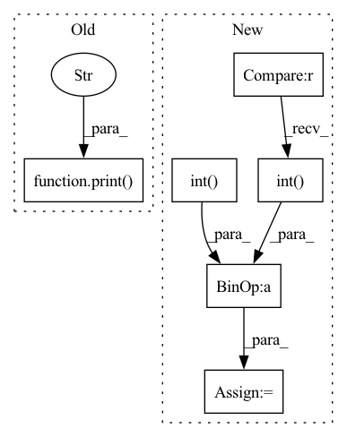

Pattern ID :39238

Before Change
print("mask norm: ", norm_list)
confidence = get_confidence(loss_list, self.attack.target_class)
print("confidence: ", confidence)
def get_potential_triggers(self) -> (torch.Tensor, torch.Tensor):
norm_list, loss_list = [], []
// todo: parallel to avoid for loop
After Change
loss_list, mark_list = self.get_potential_triggers()
print("loss: ", loss_list) // DeepInspect use this)
detect_mask = mark_list[self.target_class] > 1e-1
sum_temp = detect_mask.int() + real_mask.int()
overlap = (sum_temp == 2).sum().float() / (sum_temp >= 1).sum().float()
print(f"Jaccard index: {overlap:.3f}")
def get_potential_triggers(self) -> (torch.Tensor, torch.Tensor):
In pattern: SUPERPATTERN
Frequency: 3
Non-data size: 6
Instances
Fragment ID: 111487781
Project Name: ain-soph/trojanzoo
Commit Name: 6c5c8e1497a35b04b94df96e36657854ae08bc06
Time: 2020-09-18
Author: ain-soph@live.com
File Name: trojanzoo/defense/backdoor/deep_inspect.py
M Class Name: Deep_Inspect
N Class Name: Deep_Inspect
M Method Name: detect(1)
N Method Name: detect(1)
M Parent Class: Defense_Backdoor
N Parent Class: Defense_Backdoor
M File Name: trojanzoo/defense/backdoor/deep_inspect.py
N File Name: trojanzoo/defense/backdoor/deep_inspect.py
M Start Line: 57
M End Line: 60
N Start Line: 55
N End Line: 62
'>
Before Change
print(f"Threshold: ({threshold_low:5.3f}, {threshold_high:5.3f})")
percent = float(((poison_entropy < threshold_low) +
(poison_entropy > threshold_high)).sum().float() / len(poison_entropy))
print("Classification Acc: ", percent)
def check(self, _input) -> torch.Tensor:
_list = []
for i, data in enumerate(self.loader):
After Change
threshold_high = float(clean_entropy[int(0.95 * len(clean_entropy))])
y_true = torch.cat((torch.zeros_like(clean_entropy), torch.ones_like(poison_entropy)))
entropy = torch.cat((clean_entropy, poison_entropy))
y_pred = torch.where(((entropy < threshold_low).int() + (entropy > threshold_high).int()).bool(),
torch.ones_like(entropy), torch.zeros_like(entropy))
print(f"Threshold: ({threshold_low:5.3f}, {threshold_high:5.3f})")
print("f1_score:", metrics.f1_score(y_true, y_pred, average="weighted"))
'>
Fragment ID: 111487828
Project Name: ain-soph/trojanzoo
Commit Name: b252ab7e9a5f58cee299ad63b05fca46835a6b65
Time: 2020-09-13
Author: ain-soph@live.com
File Name: trojanzoo/defense/backdoor/strip.py
M Class Name: STRIP
N Class Name: STRIP
M Method Name: detect(1)
N Method Name: detect(1)
M Parent Class: Defense_Backdoor
N Parent Class: Defense_Backdoor
M File Name: trojanzoo/defense/backdoor/strip.py
N File Name: trojanzoo/defense/backdoor/strip.py
M Start Line: 35
M End Line: 43
N Start Line: 35
N End Line: 49
'>
Before Change
print("loss: ", loss_list)
confidence = get_confidence(loss_list, self.attack.target_class)
print("confidence: ", confidence)
def get_potential_triggers(self) -> (torch.Tensor, torch.Tensor, torch.Tensor):
mark_list, mask_list, loss_list = [], [], []
// todo: parallel to avoid for loop
After Change
print("mask_norms: ", mask_norms)
print("loss: ", loss_list)
detect_mask = mask_list[self.target_class] > 1e-2
sum_temp = detect_mask.int() + real_mask.int()
overlap = (sum_temp == 2).sum().float() / (sum_temp >= 1).sum().float()
print(f"Jaccard index: {overlap:.3f}")
def get_potential_triggers(self) -> (torch.Tensor, torch.Tensor, torch.Tensor):
'>
Fragment ID: 111487823
Project Name: ain-soph/trojanzoo
Commit Name: 6c5c8e1497a35b04b94df96e36657854ae08bc06
Time: 2020-09-18
Author: ain-soph@live.com
File Name: trojanzoo/defense/backdoor/neural_cleanse.py
M Class Name: Neural_Cleanse
N Class Name: Neural_Cleanse
M Method Name: detect(1)
N Method Name: detect(1)
M Parent Class: Defense_Backdoor
N Parent Class: Defense_Backdoor
M File Name: trojanzoo/defense/backdoor/neural_cleanse.py
N File Name: trojanzoo/defense/backdoor/neural_cleanse.py
M Start Line: 56
M End Line: 57
N Start Line: 51
N End Line: 60